https://developer.apple.com/documentation/uikit/uibutton
https://developer.apple.com/documentation/uikit/uibutton#topics
Events (refer to documentation for other events)
The default event is Touch Up Inside
Button states (refer to documentation for other button states)
A button with a default state will handle events, while a disabled button will not
Properties / Attributes (refer to documentation for other properties / attributes)
isEnabled: Bool - Set the value of this property to true to enable the control or false to disable it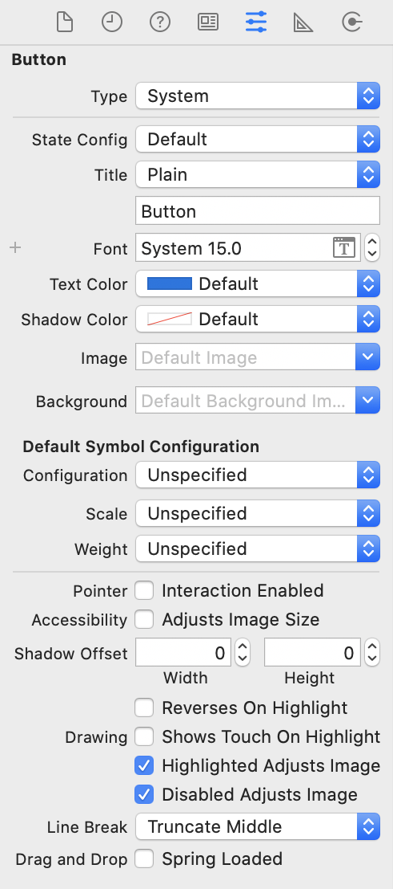
SampleProject01UIButton object to Main.storyboard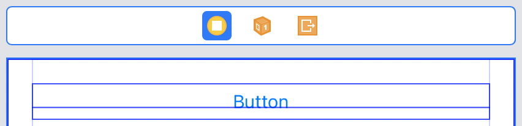
actTouchDown for Touch Down eventactTouchUpInside for Touch Up Inside event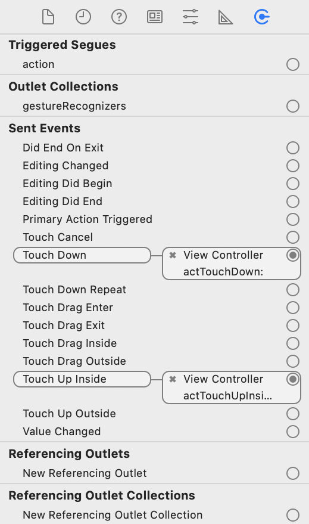
print(#function) statement in each of the IBAction methodsimport UIKit
class ViewController: UIViewController {
override func viewDidLoad() {
super.viewDidLoad()
}
@IBAction func actTouchDown(_ sender: UIButton) {
print(#function)
}
@IBAction func actTouchUpInside(_ sender: UIButton) {
print(#function)
}
}actTouchDown(_:)
actTouchDown(_:) actTouchUpInside(_:)
SampleProject01outButton) for the button.UIButton objects (title as Enable and Disable) to Main.storyboard with IBAction methods (actEnable and actDisable respectively).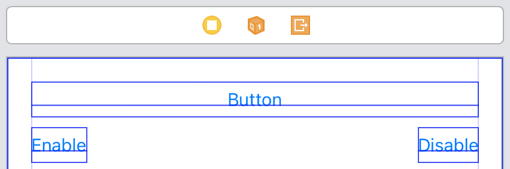
viewDidLoad to set different titles for different button statesactEnable to enable outButton.actDisable to disable outButton.import UIKit
class ViewController: UIViewController {
@IBOutlet weak var outButton: UIButton!
override func viewDidLoad() {
super.viewDidLoad()
outButton.setTitle("Enabled", for: .normal)
outButton.setTitle("Disabled", for: .disabled)
}
@IBAction func actTouchDown(_ sender: UIButton) {
print(#function)
}
@IBAction func actTouchUpInside(_ sender: UIButton) {
print(#function)
}
@IBAction func actEnable(_ sender: UIButton) {
outButton.isEnabled = true
}
@IBAction func actDisable(_ sender: UIButton) {
outButton.isEnabled = false
}
}outButton is enabled and has a title of EnabledoutButton is disabled and has a title of Disabled; also note that the title is greyed out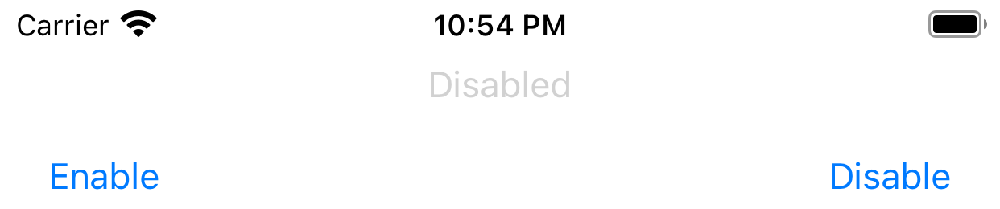
https://developer.apple.com/documentation/uikit/uitextfield
https://developer.apple.com/documentation/uikit/uitextfield#topics
Events (refer to documentation for other events)
Methods (refer to documentation for other methods)
func resignFirstResponder() -> Bool - when this text field has focus and has a keyboard, causes the keyboard to be dismissedProperties / Attributes (refer to documentation for other properties / attributes)
text: String? - the text displayed by the text fieldoptional var keyboardType: UIKeyboardType { get set } - the keyboard style associated with the text object.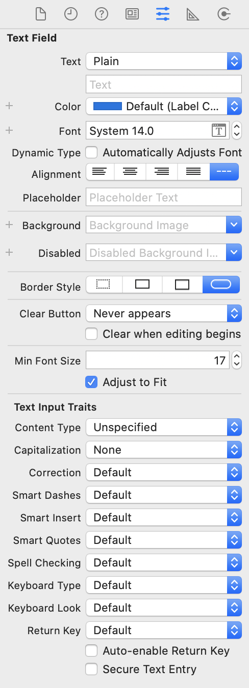
SampleProject02UITextField objects to Main.storyboard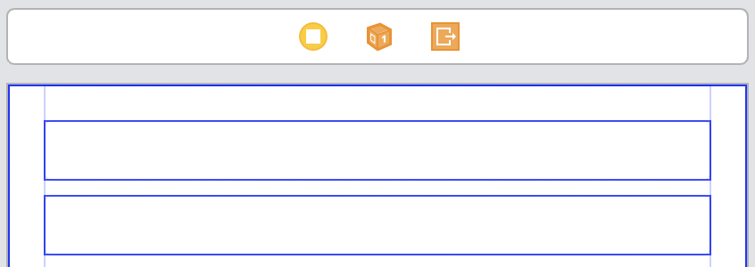
actEditingDidBegin for Editing Did Begin eventactEditingDidEnd for Editing Did End eventactEditingChanged for Editing Changed eventactDidEndOnExit for Did End On Exit event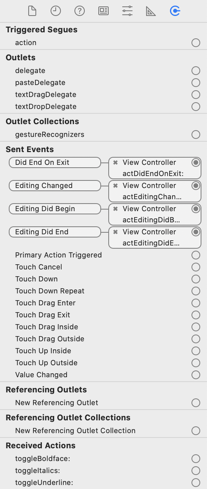
print(#function) statement in each of the IBAction methodsimport UIKit
class ViewController: UIViewController {
override func viewDidLoad() {
super.viewDidLoad()
}
@IBAction func actEditingDidBegin(_ sender: UITextField) {
print(#function)
}
@IBAction func actEditingDidEnd(_ sender: UITextField) {
print(#function)
}
@IBAction func actEditingChanged(_ sender: UITextField) {
print(#function)
}
@IBAction func actDidEndOnExit(_ sender: UITextField) {
print(#function)
}
}actEditingDidBegin is calledactEditingDidEnd is called; the upper text field has lost focus, so the Editing Did End event for the upper text field was firedactEditingChanged is called whenever the text in the text field is changed (note: if there is no on-screen keyboard, press CMD-K)actDidEndOnExit and actEditingDidEnd are calledhttps://docs.swift.org/swift-book/LanguageGuide/Protocols.html
A protocol defines a set of methods with no implementation
// protocol definition
protocol SomeProtocol {
func someMethod()
}A class conforms to a protocol by implementing the methods found in that protocol
Add a : and the protocol name after the class name to show that the class conforms to the protocol.
// syntax to show a class conforms to a protocol
class SomeClass : SomeProtocol {
// implementation of protocol method
func someMethod() {
}
}If the class is a subclass, add a comma after the superclass name to show that the class conforms to the protocol.
class SomeSuperClass {
}
// syntax to show a class conforms to a protocol
class SomeSubClass : SomeSuperClass, SomeProtocol {
// implementation of protocol method
func someMethod() {
}
}Delegation
Delegation is a design pattern that enables a class (known as the delegating class) to delegate some of its responsibilities to an instance of another class (known as the delegate class).
To implement this design pattern:
https://developer.apple.com/documentation/uikit/uitextfielddelegate
// Asks the delegate if editing should begin in the specified text field.
func textFieldShouldBeginEditing(_ textField : UITextField) -> Bool {
return true
}// Tells the delegate that editing began in the specified text field.
func textFieldDidBeginEditing(_ textField : UITextField) {
}// Asks the delegate if editing should stop in the specified text field.
func textFieldShouldEndEditing(_ textField : UITextField) -> Bool {
return true
}// Tells the delegate that editing stopped for the specified text field.
func textFieldDidEndEditing(_ textField : UITextField) {
}SampleProject02outTextField) for the upper text field.UITextFieldDelegate protocolUITextFieldDelegate methodsViewController and the delegating class is UITextField. The attachment is done via the delegate property in UITextField.import UIKit
// Declare that ViewController conforms to the UITextFieldDelegate protocol
class ViewController: UIViewController, UITextFieldDelegate {
// Create an IBOutlet (outTextField) for the upper text field.
@IBOutlet weak var outTextField: UITextField!
override func viewDidLoad() {
super.viewDidLoad()
// Attach an instance of the delegate class (ViewController) to
// the delegating class (UITextField) via the delegate property
// in UITextField
outTextField.delegate = self
}
@IBAction func actEditingDidBegin(_ sender: UITextField) {
print(#function)
}
@IBAction func actEditingDidEnd(_ sender: UITextField) {
print(#function)
}
@IBAction func actEditingChanged(_ sender: UITextField) {
print(#function)
}
@IBAction func actDidEndOnExit(_ sender: UITextField) {
print(#function)
}
// Implement the UITextFieldDelegate methods
// Asks the delegate if editing should begin in the specified text field.
func textFieldShouldBeginEditing(_ textField : UITextField) -> Bool {
print(#function)
return true
}
// Tells the delegate that editing began in the specified text field.
func textFieldDidBeginEditing(_ textField : UITextField) {
print(#function)
}
// Asks the delegate if editing should stop in the specified text field.
func textFieldShouldEndEditing(_ textField : UITextField) -> Bool {
print(#function)
return true
}
// Tells the delegate that editing stopped for the specified text field.
func textFieldDidEndEditing(_ textField : UITextField) {
print(#function)
}
}textFieldShouldBeginEditing(_:) actEditingDidBegin(_:) textFieldDidBeginEditing(_:)
textFieldShouldEndEditing(_:) actEditingDidEnd(_:) textFieldDidEndEditing(_:)
textFieldShouldEndEditing(_:) method to validate the text. For example, if we expect the text field to only have the text hello we would modify the code as shown below:func textFieldShouldEndEditing(_ textField : UITextField) -> Bool {
if textField.text == "hello" {
return true
}
return false
}goodbyehello in the upper text field@IBOutlet weak var outTextField1: UITextField!
@IBOutlet weak var outTextField2: UITextField!
@IBAction func actEditingDidBegin(_ sender: UITextField) {
if (sender == outTextField1) {
} else if (sender == outTextField2) {
}
}
func textFieldDidBeginEditing(_ textField : UITextField) {
if (textField == outTextField1) {
} else if (textField == outTextField2) {
}
}https://docs.swift.org/swift-book/LanguageGuide/TheBasics.html
Non-optional
let number1 : Int = 1
let total1 = number1 + number1
print(total1)Optional - if statement and forced unwrapping
!let number2 : Int? = 2
// if statements and forced unwrapping
// if number2 is not nil, execute the statements within the curly brackets
// unwrap number2 by using the forced unwrapping operator (!)
if (number2 != nil) {
let total2 = number2! + number2!
print(total2)
}Optional - optional binding
If the optional has a value:
Note that:
let number2 : Int? = 2
// optional binding
// if number2 is not nil, unwrap number2 and assign it to a new constant called num
// execute the statements within the curly brackets
// note that num and total2 exists only within the curly brackets
if let num = number2 {
let total2 = num + num
print(total2)
}Note that:
if let firstNumber = Int("4"), let secondNumber = Int("42"),
firstNumber < secondNumber && secondNumber < 100 {
print("\(firstNumber) < \(secondNumber) < 100")
}Optional - nil-coalescing operator
If the optional has a value, unwrap the optional and assign it to the new variable
If the optional does not have a value, assign the value after the nil-coalescing operator ?? to the new variable
var number2 : Int? = 2
// nil-coalescing operator
// if number2 is not nil, unwrap number2 and assign it to newnumber2
// if number2 is nil, assign 0 to newnumber2
let newnumber2 = number2 ?? 0
let total2 = newnumber2 + newnumber2
print(total2)implicitly unwrapped optional
let number3 : Int! = 3
let total3 = number3 + number3
print(total3)SampleProject03UITextField objects (IBOutlet outTextField1 and outTextField2), one UILabel object (IBOutlet outLabel) and one UIButton object (IBAction actAdd) to Main.storyboard.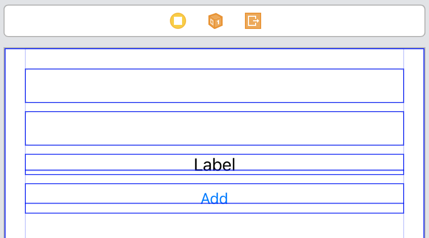
import UIKit
class ViewController: UIViewController {
@IBOutlet weak var outTextField1: UITextField!
@IBOutlet weak var outTextField2: UITextField!
@IBOutlet weak var outLabel: UILabel!
override func viewDidLoad() {
super.viewDidLoad()
}
@IBAction func actAdd(_ sender: UIButton) {
// optional binding
if let text1 = outTextField1.text,
let text2 = outTextField2.text,
let number1 = Int(text1),
let number2 = Int(text2) {
let sum = number1 + number2
outLabel.text = "\(sum)"
}
}
}3 and 4 into the two text fields respectively, and press the add button - the sum is shown in the labeltwo into outTextField1 and press the add button - nothing happens because the optional binding fails (Int conversion of two results in nil)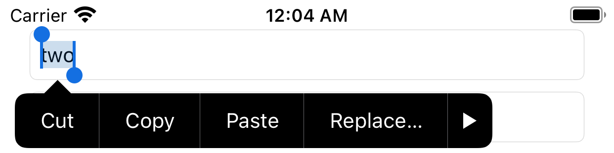
SampleProject03resignFirstResponder() method on outTextField1import UIKit
class ViewController: UIViewController {
@IBOutlet weak var outTextField1: UITextField!
@IBOutlet weak var outTextField2: UITextField!
@IBOutlet weak var outLabel: UILabel!
override func viewDidLoad() {
super.viewDidLoad()
}
@IBAction func actAdd(_ sender: UIButton) {
// optional binding
if let text1 = outTextField1.text,
let text2 = outTextField2.text,
let number1 = Int(text1),
let number2 = Int(text2) {
let sum = number1 + number2
outLabel.text = "\(sum)"
}
// dismiss the keyboard for outTextField1
outTextField1.resignFirstResponder()
}
}3 into outTextField1 and 4 into outTextField2, and press the add button - the sum is shown in the label, but they keyboard remainsoutTextField1 and press the add button - the keyboard is dismissedimport UIKit
// step 1 - declare conformance to UITextFieldDelegate
class ViewController: UIViewController, UITextFieldDelegate {
// step 2 - create IBOutlet properties for all required text field objects
@IBOutlet weak var outTextField1: UITextField!
@IBOutlet weak var outTextField2: UITextField!
@IBOutlet weak var outLabel: UILabel!
// step 3 - declare a property to keep track of the active field
var activeTextField : UITextField!
override func viewDidLoad() {
super.viewDidLoad()
// step 4 - set the delegate for all required text field objects
outTextField1.delegate = self
outTextField2.delegate = self
}
// step 5 - implement textFieldDidBeginEditing
func textFieldDidBeginEditing(_ textField: UITextField) {
activeTextField = textField
}
// step 6 - implement textFieldDidEndEditing
func textFieldDidEndEditing(_ textField: UITextField) {
activeTextField = nil
}
@IBAction func actAdd(_ sender: UIButton) {
// optional binding
if let text1 = outTextField1.text,
let text2 = outTextField2.text,
let number1 = Int(text1),
let number2 = Int(text2) {
let sum = number1 + number2
outLabel.text = "\(sum)"
}
// step 7 - dismiss the keyboard for the active field
if (activeTextField != nil) {
activeTextField.resignFirstResponder()
}
}
}Create an app with the following software requirements:
The app allows the user to enter a first name and a last name in two separate text fields; there is a clear indication to the user which text field is for the first name and which text field is for the last name.
When the user presses the Join button, the first name and last name are joined together and displayed in a label; the size of the text in this label is in bold and is 24 points.
Any visible keyboard should be dismissed when the Join button is pressed; this should be accomplished by tracking the last active text field.
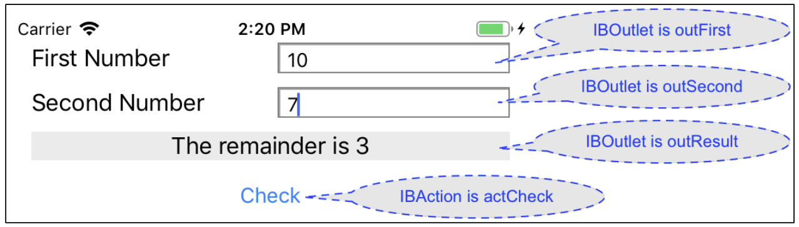
Create an app with the following software requirements:
When the Check button is pressed, the application checks if there is a remainder when the number in text field outFirst is divided by the number in text field outSecond
The result is shown in label outResult
There is no remainderNote how the remainder operator behaves in Swift:
var result = 10 % 5 // value of result is 0
var result = 10 % 7 // value of result is 3Create an app with the following software requirements:
Create an app with the following software requirements: